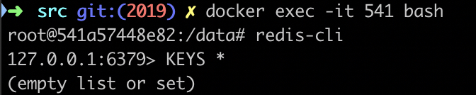
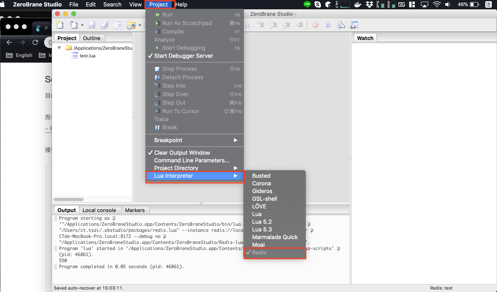
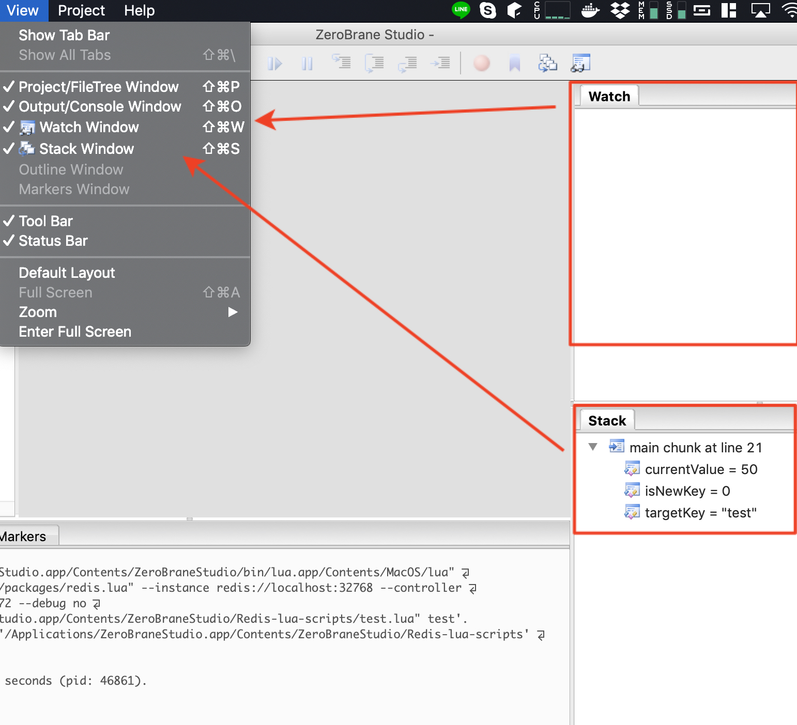
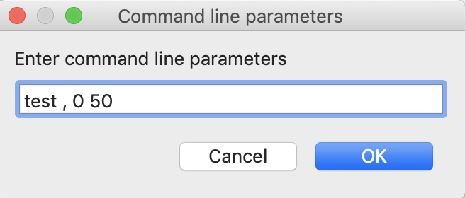
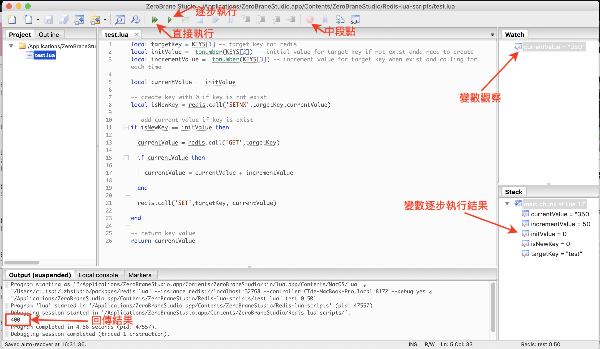
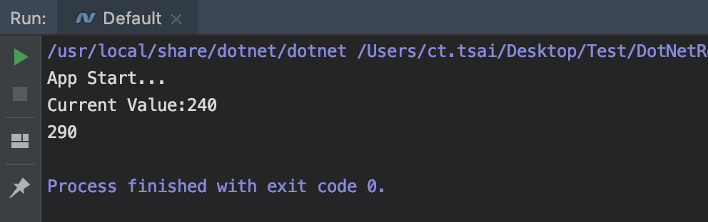

<!-- build time:Mon Sep 30 2019 16:15:22 GMT+0000 (Coordinated Universal Time) --><!DOCTYPE HTML><html lang="zh-TW"><head><meta name="generator" content="Hexo 3.9.0"><meta charset="utf-8"><meta name="keywords" content="Debugging Redis Lua Script with C# on macOS, blackie tsai, blackie1019"><meta name="description" content="分享如何在 .NET Core 使用 C# 正確的使用 Redis Lua Script 開發與除錯流程。先前分享如何使用 ZeroBrane Studio 協助 Redis 的 Lua Script 開發與除錯介紹如何正確地使用工具來幫我"><meta http-equiv="X-UA-Compatible" content="IE=edge"><meta name="viewport" content="width=device-width,initial-scale=1,user-scalable=no"><meta name="renderer" content="webkit|ie-stand|ie-comp"><meta name="mobile-web-app-capable" content="yes"><meta name="format-detection" content="telephone=no"><meta name="apple-mobile-web-app-capable" content="yes"><meta name="apple-mobile-web-app-status-bar-style" content="black-translucent"><title>Debugging Redis Lua Script with C# on macOS | Blackie&#39;s Failed Notes</title><link rel="icon" type="image/png" href="/favicon.png"><link rel="stylesheet" type="text/css" href="https://cdnjs.cloudflare.com/ajax/libs/font-awesome/5.11.1/css/all.min.css"><link rel="stylesheet" type="text/css" href="https://cdnjs.cloudflare.com/ajax/libs/materialize/1.0.0/css/materialize.min.css"><link rel="stylesheet" type="text/css" href="https://cdnjs.cloudflare.com/ajax/libs/aos/2.3.4/aos.css"><link rel="stylesheet" type="text/css" href="https://cdnjs.cloudflare.com/ajax/libs/animate.css/3.5.1/animate.min.css"><link rel="stylesheet" type="text/css" href="https://cdnjs.cloudflare.com/ajax/libs/lightgallery/1.6.11/css/lightgallery.min.css"><link rel="stylesheet" type="text/css" href="/css/matery.css"><link rel="stylesheet" type="text/css" href="/css/my.css"><style type="text/css"></style><script src="https://cdnjs.cloudflare.com/ajax/libs/jquery/2.2.0/jquery.min.js"></script><link rel="stylesheet" href="/new-blackie1019.github.io/css/prism-tomorrow.css" type="text/css"></head><body><header class="navbar-fixed"><nav id="headNav" class="bg-color nav-transparent"><div id="navContainer" class="nav-wrapper head-container"><div class="brand-logo"><a href="/new-blackie1019.github.io/" class="waves-effect waves-light"> <span class="logo-span">Blackie's Failed Notes</span></a></div><a href="#" data-target="mobile-nav" class="sidenav-trigger button-collapse"><i class="fas fa-bars"></i></a><ul class="right nav-menu"><li class="hide-on-med-and-down nav-item"><a href="/tags" class="waves-effect waves-light"><i class="fas fa-tags" style="zoom:.6"></i> <span>Tags</span></a></li><li class="hide-on-med-and-down nav-item"><a href="/categories" class="waves-effect waves-light"><i class="fas fa-bookmark" style="zoom:.6"></i> <span>Categories</span></a></li><li class="hide-on-med-and-down nav-item"><a href="/archives" class="waves-effect waves-light"><i class="fas fa-archive" style="zoom:.6"></i> <span>Archives</span></a></li><li class="hide-on-med-and-down nav-item"><a href="/about" class="waves-effect waves-light"><i class="fas fa-user-circle" style="zoom:.6"></i> <span>About</span></a></li><li class="hide-on-med-and-down nav-item"><a href="/friends" class="waves-effect waves-light"><i class="fas fa-address-book" style="zoom:.6"></i> <span>Recommend</span></a></li><li class="hide-on-med-and-down nav-item"><a href="/atom.xml" class="waves-effect waves-light"><i class="fas fa-rss" style="zoom:.6"></i> <span>RSS</span></a></li><li><a href="#searchModal" class="modal-trigger waves-effect waves-light"><i id="searchIcon" class="fas fa-search" title="Search" style="zoom:.85"></i></a></li></ul><div id="mobile-nav" class="side-nav sidenav"><div class="mobile-head bg-color"><div class="logo-name">Blackie's Failed Notes</div><div class="logo-desc">Interested in JavaScript, ASP.NET Core, Cloud and Solution Architecture.</div></div><ul class="menu-list mobile-menu-list"><li class="m-nav-item"><a href="/tags" class="waves-effect waves-light"><i class="fa-fw fas fa-tags"></i> Tags</a></li><li class="m-nav-item"><a href="/categories" class="waves-effect waves-light"><i class="fa-fw fas fa-bookmark"></i> Categories</a></li><li class="m-nav-item"><a href="/archives" class="waves-effect waves-light"><i class="fa-fw fas fa-archive"></i> Archives</a></li><li class="m-nav-item"><a href="/about" class="waves-effect waves-light"><i class="fa-fw fas fa-user-circle"></i> About</a></li><li class="m-nav-item"><a href="/friends" class="waves-effect waves-light"><i class="fa-fw fas fa-address-book"></i> Recommend</a></li><li class="m-nav-item"><a href="/atom.xml" class="waves-effect waves-light"><i class="fa-fw fas fa-rss"></i> RSS</a></li></ul></div></div></nav></header><div class="bg-cover pd-header post-cover" style="background-image:url(/medias/featureimages/2.jpg)"><div class="container" style="right:0;left:0"><div class="row"><div class="col s12 m12 l12"><div class="brand"><div class="description center-align post-title">Debugging Redis Lua Script with C# on macOS</div></div></div></div></div></div><main class="post-container content"><link rel="stylesheet" href="https://cdnjs.cloudflare.com/ajax/libs/tocbot/4.8.0/tocbot.css"><style>#articleContent h1::before,#articleContent h2::before,#articleContent h3::before,#articleContent h4::before,#articleContent h5::before,#articleContent h6::before{display:block;content:" ";height:100px;margin-top:-100px;visibility:hidden}#articleContent :focus{outline:0}.toc-fixed{position:fixed;top:64px}.toc-widget{padding-left:20px}.toc-widget .toc-title{margin:35px 0 15px 0;padding-left:17px;font-size:1.5rem;font-weight:700;line-height:1.5rem}.toc-widget ol{padding:0;list-style:none}#toc-content ol{padding-left:10px}#toc-content ol li{padding-left:10px}#toc-content .toc-link:hover{color:#42b983;font-weight:700;text-decoration:underline}#toc-content .toc-link::before{background-color:transparent;max-height:25px}#toc-content .is-active-link{color:#42b983}#toc-content .is-active-link::before{background-color:#42b983}#floating-toc-btn{position:fixed;right:15px;bottom:76px;padding-top:15px;margin-bottom:0;z-index:998}#floating-toc-btn .btn-floating{width:48px;height:48px}#floating-toc-btn .btn-floating i{line-height:48px;font-size:1.4rem}</style><div class="row"><div id="main-content" class="col s12 m12 l9"><div id="artDetail"><div class="card"><div class="card-content article-info"><div class="row tag-cate"><div class="col s7"><div class="article-tag"><a href="/new-blackie1019.github.io/tags/NET-Core/"><span class="chip bg-color">.NET Core</span> </a><a href="/new-blackie1019.github.io/tags/C/"><span class="chip bg-color">C#</span> </a><a href="/new-blackie1019.github.io/tags/Redis/"><span class="chip bg-color">Redis</span> </a><a href="/new-blackie1019.github.io/tags/Lua-Script/"><span class="chip bg-color">Lua Script</span> </a><a href="/new-blackie1019.github.io/tags/ZeroBrane-Studio/"><span class="chip bg-color">ZeroBrane Studio</span> </a><a href="/new-blackie1019.github.io/tags/NET/"><span class="chip bg-color">.NET</span></a></div></div><div class="col s5 right-align"><div class="post-cate"><i class="fas fa-bookmark fa-fw icon-category"></i> <a href="/new-blackie1019.github.io/categories/NET/" class="post-category">.NET</a></div></div></div><div class="post-info"><div class="post-date info-break-policy"><i class="far fa-calendar-minus fa-fw"></i>Publish Date:&nbsp;&nbsp; 2019-01-13</div><div class="info-break-policy"><i class="far fa-file-word fa-fw"></i>Word Count:&nbsp;&nbsp; 1.4k</div><div class="info-break-policy"><i class="far fa-clock fa-fw"></i>Read Times:&nbsp;&nbsp; 6 Min</div><div id="busuanzi_container_page_pv" class="info-break-policy"><i class="far fa-eye fa-fw"></i>Read Count:&nbsp;&nbsp; <span id="busuanzi_value_page_pv"></span></div></div></div><hr class="clearfix"><div class="card-content article-card-content"><div id="articleContent"><p>分享如何在 .NET Core 使用 C# 正確的使用 Redis Lua Script 開發與除錯流程。</p><p>先前<a href="http://blackie1019.github.io/2018/05/01/Write-Redis-Lua-Script-with-ZeroBrane-Studio/">分享如何使用 ZeroBrane Studio 協助 Redis 的 Lua Script 開發與除錯</a>介紹如何正確地使用工具來幫我們除錯 Redis Lua Script.</p><p>本次結合 C#, .NET Core 與 macOS 環境，重新整理與介紹如何正確地使用 Redis Lua Script.</p><h2 id="為什麼使用-Redis-Lua-Script"><a href="#為什麼使用-Redis-Lua-Script" class="headerlink" title="為什麼使用 Redis Lua Script"></a>為什麼使用 Redis Lua Script</h2><p>在大部分的開發者中，會使用 Redis 相關 framework 的人很普遍，但絕大多數僅使用這些 Framework 已包裹好的指令做操作，鮮少自己將商業邏輯包裹成一個 <code>Lua Script</code> 指令操作．</p><p>以 C# + .NET Core 為例，大多使用者都會使用下列的 framework 操作 Redis 內資料:</p><ul><li><a href="https://github.com/StackExchange/StackExchange.Redis" target="_blank" rel="noopener">StackExchange</a></li><li><a href="https://github.com/ServiceStack/ServiceStack.Redis" target="_blank" rel="noopener">ServiceStack</a></li></ul><p>如果今天要開發的一個資料儲存的情境如下:</p><ul><li>確認當前 <code>test</code> 是否存在，如果不存在則在第一次呼叫的時候給予預設值 <code>0</code></li><li>第二次開始的呼叫會針對 <code>test</code> 當前的值每次增加 <code>50</code></li></ul><p>以一般 Redis 的指令操作來說我們需要透過多個指令串接以上內容，這會造成 .NET Core 的程式多次進出 Redis Instance 內．</p><p>而透過 <code>Lua Script</code> 以上的指令可以僅透過一個客製的指令進行操作，大幅提升 Redis 效能與反應．</p><p>Redis的架構設計<strong>單執行緒</strong>的設計，在運行Lua script的時候是沒辦法處理其他的請求的，所以Lua script並不能像Database的Stored Procedure一樣運行複雜的商務邏輯，個人認為如果有以下情境可以考慮採用：</p><ul><li>避免多次請求來回浪費掉的round-trip network latency</li><li>創造出 Redis 與 Redis Framework 沒有支援的command</li><li>Atomic的資料操作 與 Transaction</li></ul><h2 id="Redis-Lua-Script-Development-and-Debugging-on-macOS"><a href="#Redis-Lua-Script-Development-and-Debugging-on-macOS" class="headerlink" title="Redis Lua Script Development and Debugging on macOS"></a>Redis Lua Script Development and Debugging on macOS</h2><p>這邊開始介紹如何在 macOS 的環境開發 Redis Lua Script</p><p>大致上的內容請先參考<a href="http://blackie1019.github.io/2018/05/01/Write-Redis-Lua-Script-with-ZeroBrane-Studio/">分享如何使用 ZeroBrane Studio 協助 Redis 的 Lua Script 開發與除錯</a></p><h3 id="Redis-with-Docker"><a href="#Redis-with-Docker" class="headerlink" title="Redis with Docker"></a>Redis with Docker</h3><p>環境使用 Docker 進行 Redis Instance 的建置，指令如下：</p><pre><code>docker pull Redis
docker run -P --name redis-lab -d redis</code></pre><p>透過 <code>-P</code> 參數，這裡進行動態的 port 配置與對應至 container 內的 <code>6379</code> port</p><p>從 <code>docker ps -a</code> 可以查到當前配置的 port 為 32768</p><p></p><p>透過以下指令與 <code>redis-cli</code> 取得當前的所有鍵值</p><pre><code>docker exec -it &lt;container-id&gt; bash
redis-cli
KEYS *</code></pre><p></p><h3 id="Install-ZeroBrane-Studio"><a href="#Install-ZeroBrane-Studio" class="headerlink" title="Install ZeroBrane Studio"></a>Install ZeroBrane Studio</h3><p>至官網下載<a href="https://studio.zerobrane.com/download?not-this-time" target="_blank" rel="noopener">ZeroBrane Studio</a> 與 <a href="https://raw.githubusercontent.com/pkulchenko/ZeroBranePackage/master/redis.lua" target="_blank" rel="noopener">ZeroBranePackage/redis.lua</a> 這個 plugin</p><p>安裝好後可配置使用者設定，載入剛下載的 plugin 至 ZeroBrane Studio 中：</p><pre><code>mkdir $HOME/.zbstudio
mkdir $HOME/.zbstudio/packages</code></pre><p>接者將下載的 <code>redis.lua</code> plugin 檔案放入剛剛建立的目錄下($HOME/.zbstudio/packages)</p><p>接著將程序打開後可以看到下圖及代表設定成功:</p><p></p><p>而開發時不要忘記要開啟 <code>watch window</code> 與 <code>stack window</code> 協助觀察變數的變化</p><p></p><h3 id="Try-round-for-ZeroBrane-Studio-debugging"><a href="#Try-round-for-ZeroBrane-Studio-debugging" class="headerlink" title="Try round for ZeroBrane Studio debugging"></a>Try round for ZeroBrane Studio debugging</h3><p>這邊開啟應用程式後選擇 <code>redis</code> 則會跳出連線設定視窗，如果要重設則需要重新啟動 ZeroBrane Studio 才可以變更．</p><p></p><p>而如果開發的 <code>Lua Script</code> 本身有帶入參數的需求可以使用 <code>Command Line Parameters</code> 的設定帶入(多個參數可用<em>空白</em>分隔)</p><p></p><p>如需求所列，這邊我們建立的 Lua Script 如下:</p><p>test.lua</p><pre class="language-lua"><code class="language-lua"><span class="token keyword">local</span> targetKey <span class="token operator">=</span> KEYS<span class="token punctuation">[</span><span class="token number">1</span><span class="token punctuation">]</span> <span class="token comment" spellcheck="true">-- target key for redis</span>
<span class="token keyword">local</span> initValue <span class="token operator">=</span>  <span class="token function">tonumber</span><span class="token punctuation">(</span>ARGV<span class="token punctuation">[</span><span class="token number">1</span><span class="token punctuation">]</span><span class="token punctuation">)</span> <span class="token comment" spellcheck="true">-- initial value for target key if not exist and need to create</span>
<span class="token keyword">local</span> incrementValue <span class="token operator">=</span>  <span class="token function">tonumber</span><span class="token punctuation">(</span>ARGV<span class="token punctuation">[</span><span class="token number">2</span><span class="token punctuation">]</span><span class="token punctuation">)</span> <span class="token comment" spellcheck="true">-- increment value for target key when exist and calling for each time</span>

<span class="token keyword">local</span> currentValue <span class="token operator">=</span>  initValue

<span class="token comment" spellcheck="true">-- create key with 0 if key is not exist</span>
<span class="token keyword">local</span> isNewKey <span class="token operator">=</span> redis<span class="token punctuation">.</span><span class="token function">call</span><span class="token punctuation">(</span><span class="token string">'SETNX'</span><span class="token punctuation">,</span>targetKey<span class="token punctuation">,</span>currentValue<span class="token punctuation">)</span>

<span class="token comment" spellcheck="true">-- add current value if key is exist</span>
<span class="token keyword">if</span> isNewKey <span class="token operator">==</span> initValue <span class="token keyword">then</span>

  currentValue <span class="token operator">=</span> redis<span class="token punctuation">.</span><span class="token function">call</span><span class="token punctuation">(</span><span class="token string">'GET'</span><span class="token punctuation">,</span>targetKey<span class="token punctuation">)</span>

  <span class="token keyword">if</span> currentValue <span class="token keyword">then</span>

    currentValue <span class="token operator">=</span> currentValue <span class="token operator">+</span> incrementValue

  <span class="token keyword">end</span>

  redis<span class="token punctuation">.</span><span class="token function">call</span><span class="token punctuation">(</span><span class="token string">'SET'</span><span class="token punctuation">,</span>targetKey<span class="token punctuation">,</span> currentValue<span class="token punctuation">)</span>

<span class="token keyword">end</span>

<span class="token comment" spellcheck="true">-- return key value</span>
<span class="token keyword">return</span> currentValue</code></pre><p>這邊就需要傳入三個參數，所以設定上則變成:</p><p></p><p>test 為 <em>Key*，透過中間的<code>逗號</code>分隔了後面兩個 *Arg</em> ，分別為 0 與 10</p><p>而介面上簡單介紹如下(詳細介紹可參考<a href="http://blackie1019.github.io/2018/05/01/Write-Redis-Lua-Script-with-ZeroBrane-Studio/">如何使用 ZeroBrane Studio 協助 Redis 的 Lua Script 開發與除錯</a>)：</p><p></p><h2 id="NET-Core-with-Redis-Lua-Script"><a href="#NET-Core-with-Redis-Lua-Script" class="headerlink" title=".NET Core with Redis Lua Script"></a>.NET Core with Redis Lua Script</h2><p>這邊最後給一段 Sample Code 說明如何透過預先載入的方式避免執行重複的 Redis Lua Script 所造成的內存耗盡問題．</p><p>其實 <em>Redis</em> 本身就有這個做法，可透過 <a href="https://redis.io/commands/script-load" target="_blank" rel="noopener">SCRIPT LOAD</a> 產生一組 SHA 的編碼後，透過 SHA 與 <a href="https://redis.io/commands/evalsha" target="_blank" rel="noopener">EVALSHA</a> 來執行．</p><p>所以這邊的 C# 與上面已經寫好的 test.lua 的呼叫如下：</p><p>program.cs</p><pre class="language-csharp"><code class="language-csharp"><span class="token keyword">using</span> System<span class="token punctuation">;</span>
<span class="token keyword">using</span> System<span class="token punctuation">.</span>Collections<span class="token punctuation">.</span>Generic<span class="token punctuation">;</span>
<span class="token keyword">using</span> System<span class="token punctuation">.</span>Threading<span class="token punctuation">;</span>
<span class="token keyword">using</span> System<span class="token punctuation">.</span>Threading<span class="token punctuation">.</span>Tasks<span class="token punctuation">;</span>
<span class="token keyword">using</span> System<span class="token punctuation">.</span>Xml<span class="token punctuation">;</span>
<span class="token keyword">using</span> StackExchange<span class="token punctuation">.</span>Redis<span class="token punctuation">;</span>

<span class="token keyword">namespace</span> ConsoleApp1
<span class="token punctuation">{</span>
    <span class="token keyword">class</span> <span class="token class-name">Program</span>
    <span class="token punctuation">{</span>
        <span class="token keyword">static</span> <span class="token keyword">void</span> <span class="token function">Main</span><span class="token punctuation">(</span><span class="token keyword">string</span><span class="token punctuation">[</span><span class="token punctuation">]</span> args<span class="token punctuation">)</span>
        <span class="token punctuation">{</span>
            <span class="token keyword">var</span> redisHost <span class="token operator">=</span> <span class="token string">"localhost:32768"</span><span class="token punctuation">;</span>

            Console<span class="token punctuation">.</span><span class="token function">WriteLine</span><span class="token punctuation">(</span><span class="token string">"App Start..."</span><span class="token punctuation">)</span><span class="token punctuation">;</span>

            <span class="token keyword">using</span> <span class="token punctuation">(</span><span class="token keyword">var</span> conn <span class="token operator">=</span> ConnectionMultiplexer<span class="token punctuation">.</span><span class="token function">Connect</span><span class="token punctuation">(</span>redisHost<span class="token punctuation">)</span><span class="token punctuation">)</span>
            <span class="token punctuation">{</span>
                <span class="token keyword">var</span> db <span class="token operator">=</span> conn<span class="token punctuation">.</span><span class="token function">GetDatabase</span><span class="token punctuation">(</span><span class="token punctuation">)</span><span class="token punctuation">;</span>
                Console<span class="token punctuation">.</span><span class="token function">WriteLine</span><span class="token punctuation">(</span>$<span class="token string">"Current Value:{db.StringGet("</span>test<span class="token string">").ToString()}"</span><span class="token punctuation">)</span><span class="token punctuation">;</span>

                <span class="token keyword">var</span> loadedLuaScripts <span class="token operator">=</span> <span class="token keyword">new</span> <span class="token class-name">Dictionary</span><span class="token operator">&lt;</span>LuaScriptEnum<span class="token punctuation">,</span> LoadedLuaScript<span class="token operator">></span><span class="token punctuation">(</span><span class="token punctuation">)</span><span class="token punctuation">;</span>
                loadedLuaScripts<span class="token punctuation">.</span><span class="token function">Add</span><span class="token punctuation">(</span>LuaScriptEnum<span class="token punctuation">.</span>AddValueWithTargetKey<span class="token punctuation">,</span> <span class="token function">PrepareLuaScript</span><span class="token punctuation">(</span>conn<span class="token punctuation">,</span> redisHost<span class="token punctuation">,</span>
                    <span class="token string">@"local targetKey = KEYS[1] -- target key for redis
local initValue =  tonumber(ARGV[1]) -- initial value for target key if not exist and need to create
local incrementValue =  tonumber(ARGV[2]) -- increment value for target key when exist and calling for each time

local currentValue =  initValue 

-- create key with 0 if key is not exist 
local isNewKey = redis.call('SETNX',targetKey,currentValue)

-- add current value if key is exist
if isNewKey == initValue then 

  currentValue = redis.call('GET',targetKey)

  if currentValue then

    currentValue = currentValue + incrementValue

  end

  redis.call('SET',targetKey, currentValue)

end 

-- return key value
return currentValue"</span><span class="token punctuation">)</span><span class="token punctuation">)</span><span class="token punctuation">;</span>

                <span class="token keyword">var</span> executedReturn <span class="token operator">=</span> db<span class="token punctuation">.</span><span class="token function">ScriptEvaluate</span><span class="token punctuation">(</span>loadedLuaScripts<span class="token punctuation">[</span>LuaScriptEnum<span class="token punctuation">.</span>AddValueWithTargetKey<span class="token punctuation">]</span><span class="token punctuation">.</span>Hash<span class="token punctuation">,</span>
                    <span class="token keyword">new</span> <span class="token class-name">RedisKey</span><span class="token punctuation">[</span><span class="token punctuation">]</span> <span class="token punctuation">{</span><span class="token string">"test"</span><span class="token punctuation">}</span><span class="token punctuation">,</span>
                    <span class="token keyword">new</span> <span class="token class-name">RedisValue</span><span class="token punctuation">[</span><span class="token punctuation">]</span> <span class="token punctuation">{</span><span class="token number">0</span><span class="token punctuation">,</span> <span class="token number">50</span><span class="token punctuation">}</span><span class="token punctuation">)</span><span class="token punctuation">;</span>
                Console<span class="token punctuation">.</span><span class="token function">WriteLine</span><span class="token punctuation">(</span>executedReturn<span class="token punctuation">)</span><span class="token punctuation">;</span>
            <span class="token punctuation">}</span>
        <span class="token punctuation">}</span>

        <span class="token keyword">private</span> <span class="token keyword">static</span> LoadedLuaScript <span class="token function">PrepareLuaScript</span><span class="token punctuation">(</span>ConnectionMultiplexer redis<span class="token punctuation">,</span> <span class="token keyword">string</span> defaultServer<span class="token punctuation">,</span> <span class="token keyword">string</span> luaScriptContent<span class="token punctuation">)</span>
        <span class="token punctuation">{</span>
            <span class="token keyword">return</span> LuaScript
                <span class="token punctuation">.</span><span class="token function">Prepare</span><span class="token punctuation">(</span>luaScriptContent<span class="token punctuation">)</span>
                <span class="token punctuation">.</span><span class="token function">Load</span><span class="token punctuation">(</span>redis<span class="token punctuation">.</span><span class="token function">GetServer</span><span class="token punctuation">(</span>defaultServer<span class="token punctuation">)</span><span class="token punctuation">)</span><span class="token punctuation">;</span>
        <span class="token punctuation">}</span>
    <span class="token punctuation">}</span>

    <span class="token keyword">public</span> <span class="token keyword">enum</span> LuaScriptEnum
    <span class="token punctuation">{</span>
        AddValueWithTargetKey
    <span class="token punctuation">}</span>
<span class="token punctuation">}</span></code></pre><p>執行結果如下：</p><p></p><p>這段程式碼還有呼叫了<code>Load()</code>，這會把Lua script先載入指定的Redis server</p><p>一般指定 <em>Master</em> 就可以了，會自動鏡像備份到<em>Slave</em>。</p><p>載入後會拿到一個SHA1的 <em>hash code</em>，之後執行時只需傳入這個code，不需重傳整份Lua script，對需要頻繁執行的script有效能上的幫助。</p></div><hr><div class="signature"><div class="mwt_border"><span class="arrow_l_int"></span> <span class="arrow_l_out"></span><p>如果覺得還不錯麻煩請在文章上面給予推薦，支持是持續努力產出的動力</p></div></div><link rel="stylesheet" type="text/css" href="/libs/share/css/share.min.css"><div id="article-share"><div class="social-share" data-sites="twitter,linkedin,facebook" data-wechat-qrcode-helper="<p>微信扫一扫即可分享！</p>"></div><script src="/libs/share/js/social-share.min.js"></script></div><style>#reward{margin:40px 0;text-align:center}#reward .reward-link{font-size:1.88rem}#reward .btn-floating:hover{box-shadow:0 6px 12px rgba(0,0,0,.2),0 5px 15px rgba(0,0,0,.2)}#rewardModal{width:320px;height:350px}#rewardModal .reward-title{margin:15px auto;padding-bottom:5px}#rewardModal .modal-content{padding:10px}#rewardModal .close{position:absolute;right:15px;top:15px;color:rgba(0,0,0,.5);font-size:1.3rem;line-height:20px;cursor:pointer}#rewardModal .close:hover{color:#ef5350;transform:scale(1.3);-moz-transform:scale(1.3);-webkit-transform:scale(1.3);-o-transform:scale(1.3)}#rewardModal .reward-tabs{margin:0 auto;width:210px}.reward-tabs .tabs{height:38px;margin:10px auto;padding-left:0}.reward-content ul{padding-left:0!important}.reward-tabs .tabs .tab{height:38px;line-height:38px}.reward-tabs .tab a{color:#fff;background-color:#ccc}.reward-tabs .tab a:hover{background-color:#ccc;color:#fff}.reward-tabs .wechat-tab .active{color:#fff!important;background-color:#22AB38!important}.reward-tabs .alipay-tab .active{color:#fff!important;background-color:#019FE8!important}.reward-tabs .reward-img{width:210px;height:210px}</style><div id="reward"><a href="#rewardModal" class="reward-link modal-trigger btn-floating btn-large waves-effect waves-light red">赏</a><div id="rewardModal" class="modal"><div class="modal-content"><a class="close modal-close"><i class="fas fa-times"></i></a><h4 class="reward-title">你的賞識是我前進的動力</h4><div class="reward-content"><div class="reward-tabs"><ul class="tabs row"><li class="tab col s6 alipay-tab waves-effect waves-light"><a href="#alipay">支付宝</a></li><li class="tab col s6 wechat-tab waves-effect waves-light"><a href="#wechat">微 信</a></li></ul><div id="alipay"></div><div id="wechat"></div></div></div></div></div></div><script>$(function(){$(".tabs").tabs()})</script><div class="reprint" id="reprint-statement"><p class="reprint-tip"><i class="fas fa-exclamation-triangle"></i>&nbsp;&nbsp; <span>Reprint policy</span></p><div class="center-align"><a rel="license" href="https://creativecommons.org/licenses/by/4.0/" target="_blank"></a></div><br><a href="/new-blackie1019.github.io/2019/01/13/Debugging-Redis-Lua-Script-with-C-on-macOS/">《Debugging Redis Lua Script with C# on macOS》 </a>by <a href="https://blackie1019.github.io">Blackie </a>is licensed under a <a rel="license" href="https://creativecommons.org/licenses/by/4.0/" target="_blank">Creative Commons Attribution 4.0 International License</a></div><script async defer>document.addEventListener("copy", function (e) {
        let toastHTML = '<span>Copied successfully, please follow the reprint policy of this article</span><button class="btn-flat toast-action" onclick="navToReprintStatement()" style="font-size: smaller">more</a>';
        M.toast({html: toastHTML})
      });

      function navToReprintStatement() {
        $("html, body").animate({scrollTop: $("#reprint-statement").offset().top - 80}, 800);
      }</script></div></div><div class="disqus-card card" data-aos="fade-up"><div id="disqus_thread" class="card-content"><noscript>Please enable JavaScript to view the <a href="https://disqus.com/?ref_noscript">comments powered by Disqus.</a></noscript></div></div><script type="text/javascript">disqus_config = function () {
        this.page.url = 'https://blackie1019.github.io/2019/01/13/Debugging-Redis-Lua-Script-with-C-on-macOS/';
        this.page.identifier = '/2019/01/13/Debugging-Redis-Lua-Script-with-C-on-macOS/';
        this.page.title = 'Debugging Redis Lua Script with C# on macOS';
    };
    let disqus_shortname = 'blackie1019';

    (function () { // DON'T EDIT BELOW THIS LINE
        let d = document, s = d.createElement('script');
        // 如：s.src = 'https://blinkfox.disqus.com/embed.js';
        s.src = '//' + disqus_shortname + '.disqus.com/embed.js';
        s.setAttribute('data-timestamp', +new Date());
        (d.head || d.body).appendChild(s);
    })();</script><article id="prenext-posts" class="prev-next articles"><div class="row article-row"><div class="article col s12 m6" data-aos="fade-up"><div class="article-badge left-badge text-color"><i class="fas fa-chevron-left"></i>&nbsp;Previous</div><div class="card"><a href="/new-blackie1019.github.io/2019/02/10/gRPC-development-on-NET-Core-Basic/"><div class="card-image"> <span class="card-title">gRPC development on .NET Core - Basic</span></div></a><div class="card-content article-content"><div class="summary block-with-text">介紹如何在 .NET Core 中開發 gRPC 應用程式 - 基礎入門gRPC 是一個由 google 開發的開源、跨語言且高效能的 RPC Framework，它可以高效地連接單個或多個數據中心的服務，也可以支持可插拔的負載均衡，追踪，</div><div class="publish-info"><span class="publish-date"><i class="far fa-clock fa-fw icon-date"></i>2019-02-11 </span><span class="publish-author"><i class="fas fa-bookmark fa-fw icon-category"></i> <a href="/new-blackie1019.github.io/categories/NET/" class="post-category">.NET</a></span></div></div><div class="card-action article-tags"><a href="/new-blackie1019.github.io/tags/NET-Core/"><span class="chip bg-color">.NET Core</span> </a><a href="/new-blackie1019.github.io/tags/NET/"><span class="chip bg-color">.NET</span> </a><a href="/new-blackie1019.github.io/tags/gRPC/"><span class="chip bg-color">gRPC</span> </a><a href="/new-blackie1019.github.io/tags/Protobuf/"><span class="chip bg-color">Protobuf</span> </a><a href="/new-blackie1019.github.io/tags/Microservice/"><span class="chip bg-color">Microservice</span></a></div></div></div><div class="article col s12 m6" data-aos="fade-up"><div class="article-badge right-badge text-color">Next&nbsp;<i class="fas fa-chevron-right"></i></div><div class="card"><a href="/new-blackie1019.github.io/2018/11/14/MariaDB-MySQL-collaborative-development-with-Docker-Compose-Container/"><div class="card-image"> <span class="card-title">MariaDB/MySQL collaborative development with Docker-Compose/Container</span></div></a><div class="card-content article-content"><div class="summary block-with-text">記錄如何透過 docker-compose 使用 MySQL/MariaDB 完整容器化開發與測試延續上篇MariaDB/MySQL dump SQL for Docker/Container , 在協同開發裡面最常遇到的狀況就是需要還原資</div><div class="publish-info"><span class="publish-date"><i class="far fa-clock fa-fw icon-date"></i>2018-11-14 </span><span class="publish-author"><i class="fas fa-bookmark fa-fw icon-category"></i> <a href="/new-blackie1019.github.io/categories/Container/" class="post-category">Container</a></span></div></div><div class="card-action article-tags"><a href="/new-blackie1019.github.io/tags/Docker/"><span class="chip bg-color">Docker</span> </a><a href="/new-blackie1019.github.io/tags/Container/"><span class="chip bg-color">Container</span> </a><a href="/new-blackie1019.github.io/tags/MySQL/"><span class="chip bg-color">MySQL</span> </a><a href="/new-blackie1019.github.io/tags/MariaDB/"><span class="chip bg-color">MariaDB</span></a></div></div></div></div></article></div></div><div id="toc-aside" class="expanded col l3 hide-on-med-and-down"><div class="toc-widget"><div class="toc-title"><i class="far fa-list-alt"></i>&nbsp;&nbsp;TOC</div><div id="toc-content"></div></div></div></div><div id="floating-toc-btn" class="hide-on-med-and-down"><a class="btn-floating btn-large bg-color"><i class="fas fa-list-ul"></i></a></div><script src="https://cdnjs.cloudflare.com/ajax/libs/tocbot/4.8.0/tocbot.min.js"></script><script>$(function () {
        tocbot.init({
            tocSelector: '#toc-content',
            contentSelector: '#articleContent',
            headingsOffset: -($(window).height() * 0.4 - 45),
            // headingsOffset: -205,
            headingSelector: 'h2, h3, h4'
        });

        // modify the toc link href to support Chinese.
        let i = 0;
        let tocHeading = 'toc-heading-';
        $('#toc-content a').each(function () {
            $(this).attr('href', '#' + tocHeading + (++i));
        });

        // modify the heading title id to support Chinese.
        i = 0;
        $('#articleContent').children('h2, h3, h4').each(function () {
            $(this).attr('id', tocHeading + (++i));
        });

        // Set scroll toc fixed.
        let tocHeight = parseInt($(window).height() * 0.4 - 64);
        let $tocWidget = $('.toc-widget');
        $(window).scroll(function () {
            let scroll = $(window).scrollTop();
            /* add post toc fixed. */
            if (scroll > tocHeight) {
                $tocWidget.addClass('toc-fixed');
            } else {
                $tocWidget.removeClass('toc-fixed');
            }
        });

        
        /* 修复文章卡片 div 的宽度. */
        let fixPostCardWidth = function (srcId, targetId) {
            let srcDiv = $('#' + srcId);
            if (srcDiv.length === 0) {
                return;
            }

            let w = srcDiv.width();
            if (w >= 450) {
                w = w + 21;
            } else if (w >= 350 && w < 450) {
                w = w + 18;
            } else if (w >= 300 && w < 350) {
                w = w + 16;
            } else {
                w = w + 14;
            }
            $('#' + targetId).width(w);
        };

        // 切换TOC目录展开收缩的相关操作.
        const expandedClass = 'expanded';
        let $tocAside = $('#toc-aside');
        let $mainContent = $('#main-content');
        $('#floating-toc-btn .btn-floating').click(function () {
            if ($tocAside.hasClass(expandedClass)) {
                $tocAside.removeClass(expandedClass).slideUp(500);
                $mainContent.removeClass('l9');
            } else {
                $tocAside.addClass(expandedClass).slideDown(500);
                $mainContent.addClass('l9');
            }
            fixPostCardWidth('artDetail', 'prenext-posts');
        });
        
    });</script></main><footer class="page-footer bg-color"><div class="container row center-align"><div class="col s12 m8 l8 copy-right">Copyright&nbsp;&copy; <span id="year">年份</span> <a href="https://blackie1019.github.io" target="_blank">Blackie Tsai</a> |&nbsp;Powered by&nbsp;<a href="https://hexo.io/" target="_blank">Hexo</a> |&nbsp;Theme&nbsp;<a href="https://github.com/blinkfox/hexo-theme-matery" target="_blank">Matery</a><br>&nbsp;<i class="fas fa-chart-area"></i>&nbsp;Total Words:&nbsp;<span class="white-color">181.9k</span>&nbsp;字 <span id="busuanzi_container_site_pv">|&nbsp;<i class="far fa-eye"></i>&nbsp;Total Pageviews:&nbsp;<span id="busuanzi_value_site_pv" class="white-color"></span>&nbsp;次 </span><span id="busuanzi_container_site_uv">|&nbsp;<i class="fas fa-users"></i>&nbsp;Total Visitors:&nbsp;<span id="busuanzi_value_site_uv" class="white-color"></span>&nbsp;人</span><br><span id="sitetime">Loading...</span><script>function siteTime(){window.setTimeout("siteTime()",1e3);var e=1e3,t=60*e,n=60*t,o=24*n,i=365*o,r=new Date,a="2013",m="1",l="1",M="0",d="0",g="0",s=r.getFullYear(),T=r.getMonth()+1,u=r.getDate(),c=r.getHours(),f=r.getMinutes(),h=r.getSeconds(),y=Date.UTC(a,m,l,M,d,g),H=Date.UTC(s,T,u,c,f,h),I=H-y,B=Math.floor(I/i),D=Math.floor(I/o-365*B),E=Math.floor((I-(365*B+D)*o)/n),L=Math.floor((I-(365*B+D)*o-E*n)/t),w=Math.floor((I-(365*B+D)*o-E*n-L*t)/e);a==s?(document.getElementById("year").innerHTML=s,document.getElementById("sitetime").innerHTML="本站已安全運行 "+D+" 天 "+E+" 小時 "+L+" 分鐘 "+w+" 秒"):(document.getElementById("year").innerHTML=a+" - "+s,document.getElementById("sitetime").innerHTML="本站已安全運行 "+B+" 年 "+D+" 天 "+E+" 小時 "+L+" 分鐘 "+w+" 秒")}setInterval(siteTime,1e3)</script><br></div><div class="col s12 m4 l4 social-link social-statis"></div></div></footer><div class="progress-bar"></div><div id="searchModal" class="modal"><div class="modal-content"><div class="search-header"><span class="title"><i class="fas fa-search"></i>&nbsp;&nbsp;Search</span> <input type="search" id="searchInput" name="s" placeholder="Please enter a search keyword" class="search-input"></div><div id="searchResult"></div></div></div><script src="/js/search.js"></script><script type="text/javascript">$(function(){searchFunc("/new-blackie1019.github.io/search.xml","searchInput","searchResult")})</script><div id="backTop" class="top-scroll"><a class="btn-floating btn-large waves-effect waves-light" href="#!"><i class="fas fa-arrow-up"></i></a></div><script src="https://cdnjs.cloudflare.com/ajax/libs/materialize/1.0.0/js/materialize.min.js"></script><script src="https://unpkg.com/masonry-layout@4/dist/masonry.pkgd.min.js"></script><script src="https://cdnjs.cloudflare.com/ajax/libs/aos/2.3.4/aos.js"></script><script src="https://cdnjs.cloudflare.com/ajax/libs/scrollprogress/3.0.2/scrollProgress.min.js"></script><script src="https://cdnjs.cloudflare.com/ajax/libs/lightgallery/1.6.11/js/lightgallery-all.min.js"></script><script src="/js/matery.js"></script><script async src="https://www.googletagmanager.com/gtag/js?id=UA-38528893-3"></script><script>function gtag(){dataLayer.push(arguments)}window.dataLayer=window.dataLayer||[],gtag("js",new Date),gtag("config","UA-38528893-3")</script><script>!function(){var t=document.createElement("script"),s=window.location.protocol.split(":")[0];"https"===s?t.src="https://zz.bdstatic.com/linksubmit/push.js":t.src="http://push.zhanzhang.baidu.com/push.js";var e=document.getElementsByTagName("script")[0];e.parentNode.insertBefore(t,e)}()</script><script async src="/libs/others/busuanzi.pure.mini.js"></script><script>!function(e,t,o,c,i,a,n){e.DaoVoiceObject=i,e[i]=e[i]||function(){(e[i].q=e[i].q||[]).push(arguments)},e[i].l=1*new Date,a=t.createElement(o),n=t.getElementsByTagName(o)[0],a.async=1,a.src=c,a.charset="utf-8",n.parentNode.insertBefore(a,n)}(window,document,"script",("https:"==document.location.protocol?"https:":"http:")+"//widget.daovoice.io/widget/6984b559.js","daovoice"),daovoice("init",{app_id:""}),daovoice("update")</script><script type="text/javascript" src="/libs/background/ribbon-dynamic.js" async></script></body></html><!-- rebuild by neat -->